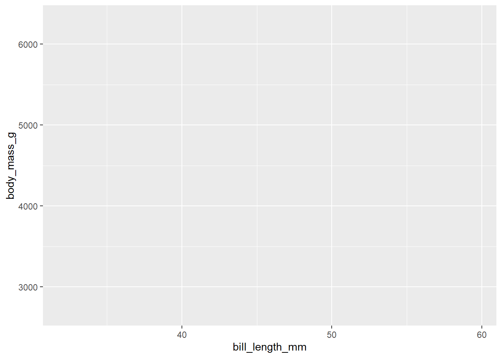
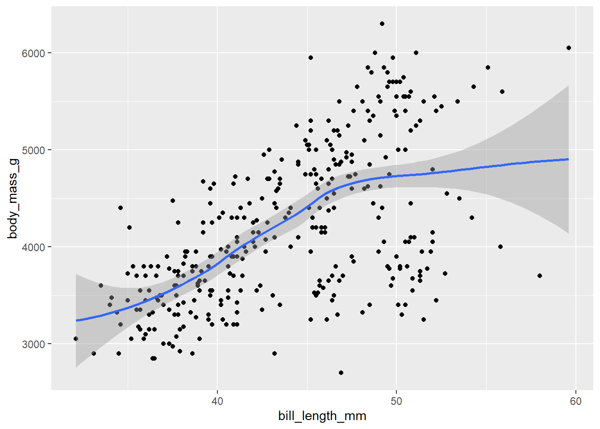
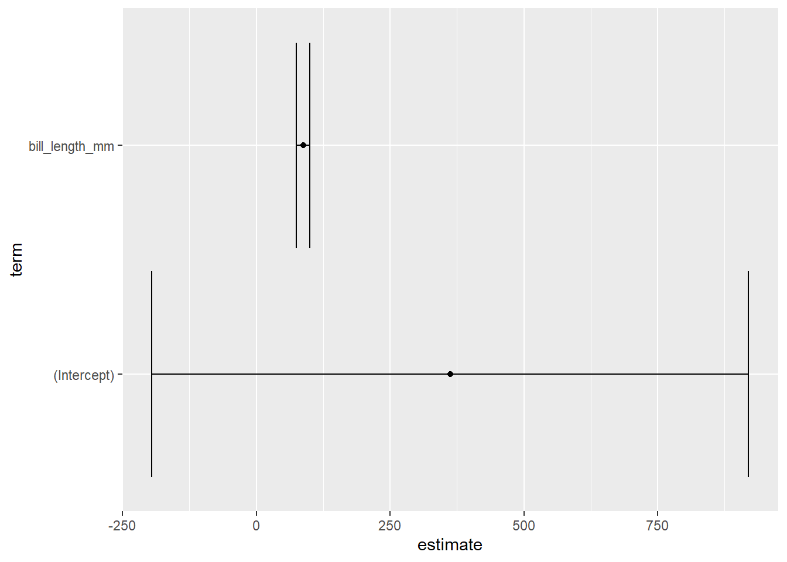
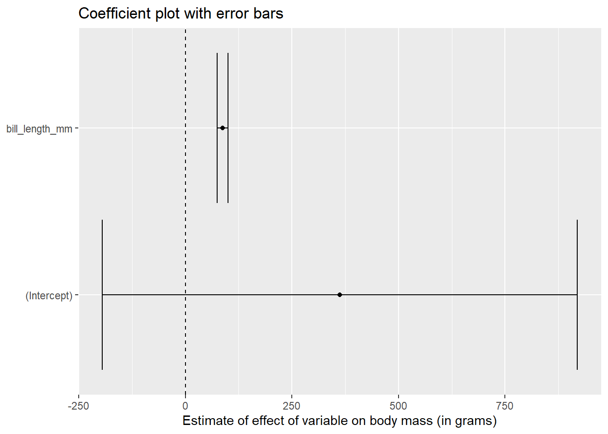

ChatGPT fills in for me as a blog post author
I ask ChatGPT to write a blog post in the same manner as one I wrote last week. The results will amaze you!
Purpose
ChatGPT is all the rage at the moment. On Friday last week I spent an hour writing a short blog post to explain how to draw coefficient plots for a colleague.
Today I asked ChatGPT to to the same.
It took 30 seconds.
Here are the results!
Penguins created with DALL·E with the prompt “A diagram of three penguins in the style of Paul Cézanne, hyper realistic, beautiful art”
Prompt
‘Prompt engineering’ describes the art of illiciting useful responses from Large Language Models (LLMs). Yet, the latest iteration of ChatGPT often gives me what I ask for on the first try.
Here, I asked ChatGPT to:
Write a blog post for a website using R tidyverse syntax that shows how to draw a coefficient plot with error bars in ggplot. Use the Palmer Penguins dataset and show the relationship between bill_length_mm and body_mass_g. Use the lm() command to run a regression and the broom::tidy(conf.int = TRUE) command on the regression output to draw error bars with the geom_errorbarh() geometry.
Output
I recieved text and code that ran almost perfectly:
It began
Are you trying to visualize the relationship between two variables in your dataset using ggplot and the tidyverse syntax in R? One way to do this is by creating a coefficient plot, which is a type of scatterplot that includes error bars for the data points. In this blog post, we’ll walk through the steps for creating a coefficient plot with error bars using the Palmer Penguins dataset, which includes measurements of bill length and body mass for several species of penguins.
To start, let’s load the necessary packages :
library(tidyverse)
library(broom)Next, we’ll load the Palmer Penguins dataset and take a look at the variables we have to work with:
library(palmerpenguins)
data("penguins")
head(penguins)# A tibble: 6 × 8
species island bill_length_mm bill_depth_mm flipper_l…¹ body_…² sex year
<fct> <fct> <dbl> <dbl> <int> <int> <fct> <int>
1 Adelie Torgersen 39.1 18.7 181 3750 male 2007
2 Adelie Torgersen 39.5 17.4 186 3800 fema… 2007
3 Adelie Torgersen 40.3 18 195 3250 fema… 2007
4 Adelie Torgersen NA NA NA NA <NA> 2007
5 Adelie Torgersen 36.7 19.3 193 3450 fema… 2007
6 Adelie Torgersen 39.3 20.6 190 3650 male 2007
# … with abbreviated variable names ¹flipper_length_mm, ²body_mass_gWe can see that the dataset includes variables such as bill_length_mm, body_mass_g, and species. For our coefficient plot, we’ll focus on the relationship between bill_length_mm and body_mass_g.
To understand the coefficient plot, we’ll start by using the ggplot function to specify the data and the aesthetics for a scatter plot. We’ll set the x variable to be bill_length_mm and the y variable to be body_mass_g.
ggplot(data = penguins, aes(x = bill_length_mm, y = body_mass_g))
Now we’ll add the geom_point layer to plot the data points and the geom_smooth layer to add a smooth line of best fit.
ggplot(data = penguins, aes(x = bill_length_mm, y = body_mass_g)) +
geom_point() +
geom_smooth()
This gives us a scatter plot with a line of best fit. We can see that body mass increases as does bill length.
Next, we can use the lm() command to run a regression analysis on the data, using bill length as the predictor variable and body mass as the outcome variable. We can then use the broom::tidy() function with the conf.int = TRUE argument to extract the regression results, including the confidence intervals for the coefficients:
reg_results <- lm(body_mass_g ~ bill_length_mm, data = penguins)
reg_tidy <- broom::tidy(reg_results, conf.int = TRUE)Now that we have the regression results, we can use ggplot to create our coefficient plot.
To add the error bars, we’ll use the geom_errorbarh() geometry and specify the xmin and xmax aesthetics as the lower and upper bounds of the confidence intervals, respectively:
ggplot(reg_tidy, aes(x = estimate, y = term)) +
geom_point() +
geom_errorbarh(aes(xmin = conf.low, xmax = conf.high))
And that’s it! We now have a coefficient plot with error bars showing the relationship between bill length and body mass in the Palmer Penguins dataset. This plot can help us understand how the two variables are related, and how certain we can be about the strength of that relationship based on the size of the error bars.
I hope this tutorial was helpful in showing you how to create a coefficient plot with error bars using the tidyverse syntax in R. If you have any questions or comments, please feel free to leave them below. Happy plotting!
What would I change?
This was a fantastic tutorial and written up in a way that is relatively easy to understand too. I enjoyed the use of succinct variable names and how to the point the write up was.
The only things I added in my own post on Friday were a dotted line at zero, a title, and some axis labels. This is shown below.
ggplot(reg_tidy, aes(x = estimate, y = term)) +
geom_point() +
geom_errorbarh(aes(xmin = conf.low, xmax = conf.high)) +
geom_vline(xintercept = 0, lty = 2) +
labs(
x = "Estimate of effect of variable on body mass (in grams)",
y = NULL,
title = "Coefficient plot with error bars"
)
Wow! Amazing. I learned a bunch about ggplot and R from reading the code which accompanied David Robinson’s screencasts in 2019 and 2020. I am excited for the generation of data analysts beginning their journey now - being able to ask for tailored instructions for a task is a real boon!